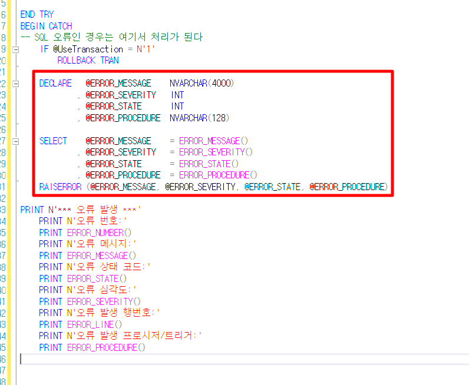

sp 오류 확인

PRINT N'*** 오류 발생 ***'
PRINT N'오류 번호:'
PRINT ERROR_NUMBER()
PRINT N'오류 메시지:'
PRINT ERROR_MESSAGE()
PRINT N'오류 상태 코드:'
PRINT ERROR_STATE()
PRINT N'오류 심각도:'
PRINT ERROR_SEVERITY()
PRINT N'오류 발생 행번호:'
PRINT ERROR_LINE()
PRINT N'오류 발생 프로시저/트리거:'
PRINT ERROR_PROCEDURE()
DECLARE ~ RAISERROR 부분 대신 넣기